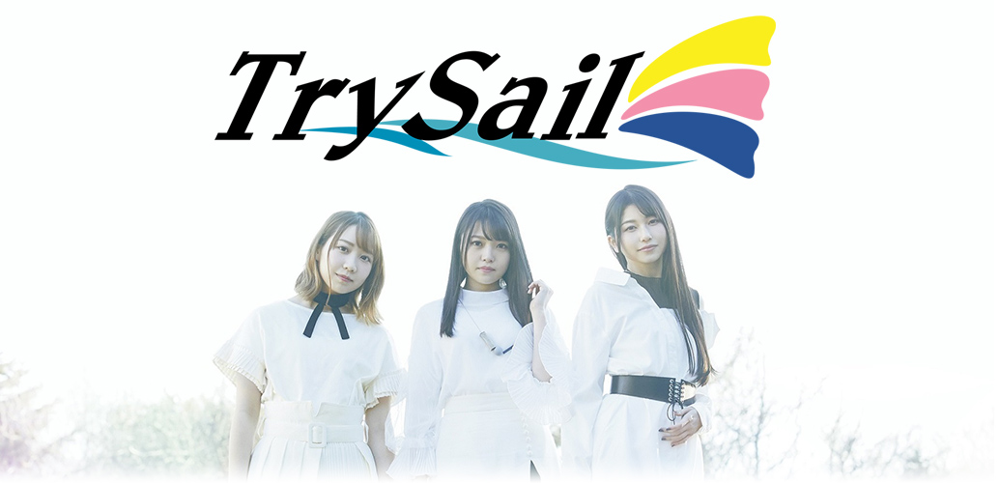
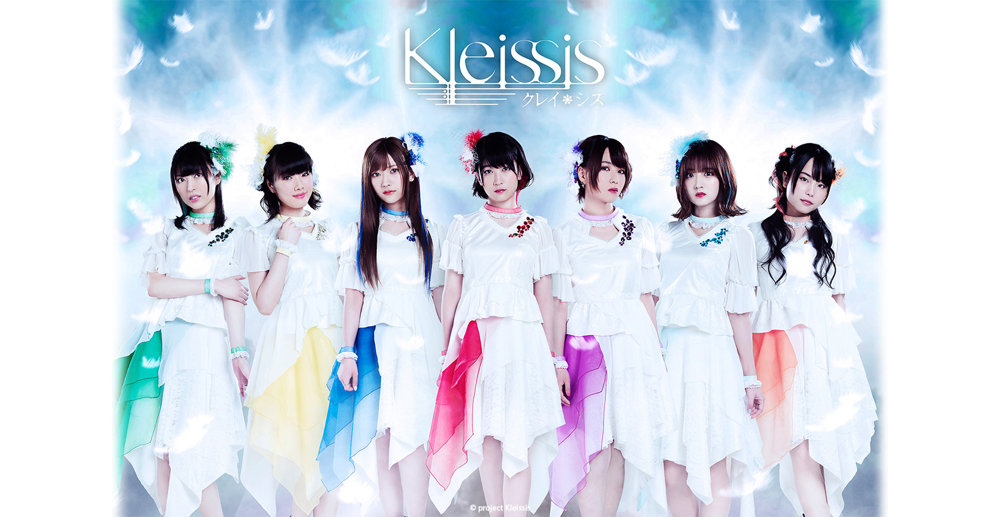
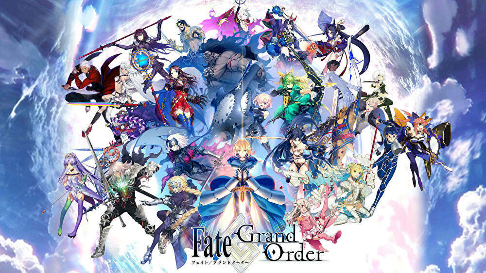

TrySail（トライセイル）とはミュージックレインに所属する声優の麻倉もも、雨宮天、夏川椎菜の3人により構成される声優ユニット。ユニット名は雨宮が考案し、「挑戦する」という意味の「try」が掛かっているほか、「trysail」が悪天候時に使用する帆であることに由来し、「どんな時でも前に進んでいけるように」という願いも込められている。

Kleissis（クレイ・シス）とは群像劇RPG『アルカ・ラスト 終わる世界と歌姫の果実』の
世界観から誕生した声優ヴォーカルユニット。
約400人の中からオーディションで選ばれた声優が7人の歌姫となり、
幻想的な世界観を歌に乗せて表現していく。
ユニット名である “Kleissis”は、 ギリシャ語の「Kleisis」(召命する)と、
「 Kleis (鍵)+ Sister 」で「 鍵を握る修道女(巫女) 」とのダブルミーニング。
さらに、 古代ギリシャ語の「 Kleio(祝福の女神)」という意味も込められている。

『Fate/Grand Order』（フェイト・グランドオーダー）は、ゲームブランドTYPE-MOONによるゲーム作品『Fate/stay night』を元として製作されているスマートフォン専用ロールプレイングゲーム。略称は「Fate/GO」もしくは「FGO」。